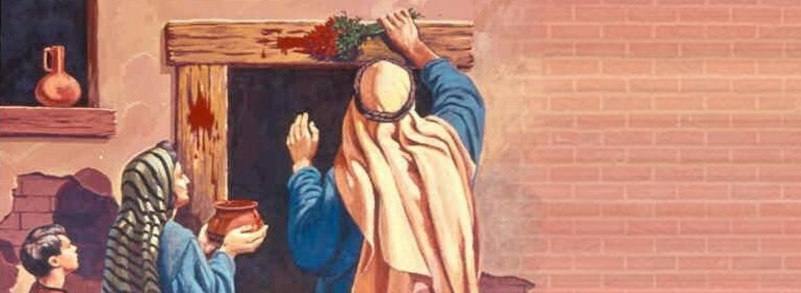

Passover: Redemption Through the Blood (Exodus 12)
"When I see the blood, I will pass over you." (Exodus 12:13)
Passover marks the climax of divine judgment and mercy. After nine plagues, God announces the final blow: the death of Egypt's firstborn. But for Israel, a way of escape is given - through the blood of a lamb, painted on doorposts. This act of obedience and faith becomes the foundation of Israel's deliverance and identity.

The First Passover
Each household was to select a spotless lamb, slaughter it, and apply its blood to the doorframe. Inside, they would eat the lamb with unleavened bread and bitter herbs, dressed for departure. That night, the Lord passed through Egypt - bringing death to the unmarked, and sparing those covered by the blood.
- Judgment: God's justice against oppression and idolatry.
- Substitution: The lamb dies so the firstborn may live.
- Deliverance: Israel leaves Egypt under divine protection.
Symbolism and Fulfillment
Passover is not just historical - it's prophetic. The lamb points forward to Christ, the ultimate sacrifice. The blood that shields from judgment becomes the central theme of salvation throughout Scripture.
Relevance to Salvation
- God provides a way of escape through substitutionary sacrifice.
- Faith and obedience activate divine protection.
- Redemption is both personal and communal - every household participates.
"It is the Lord's Passover." (Exodus 12:11)